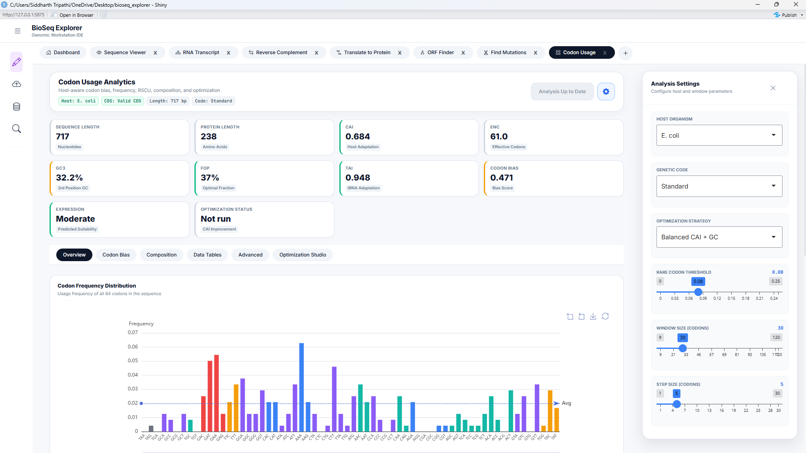
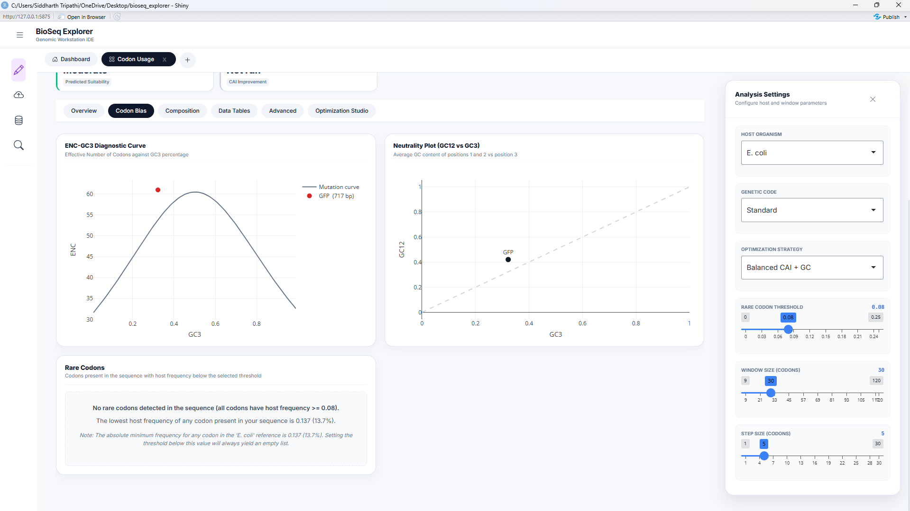
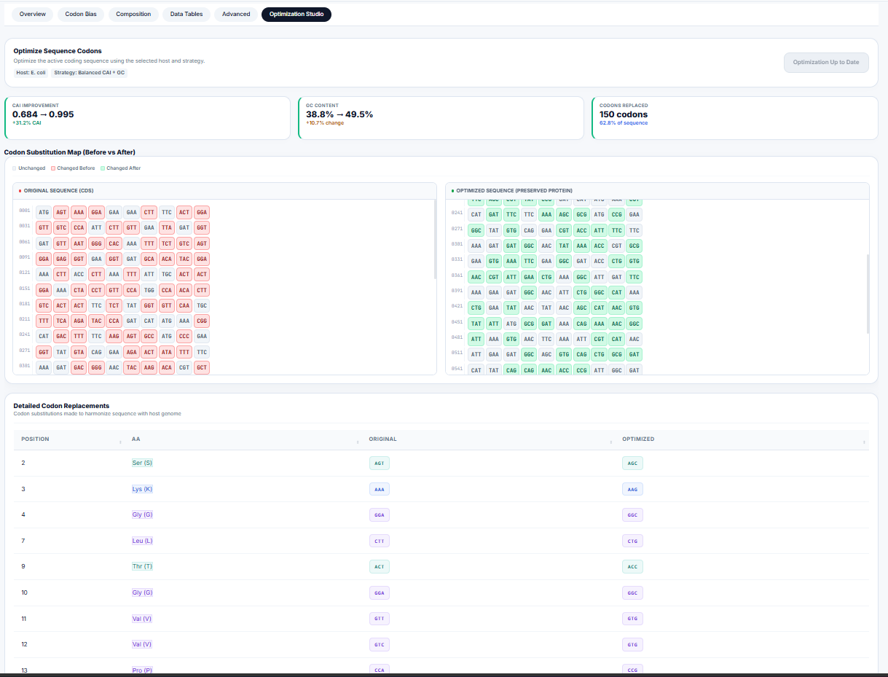
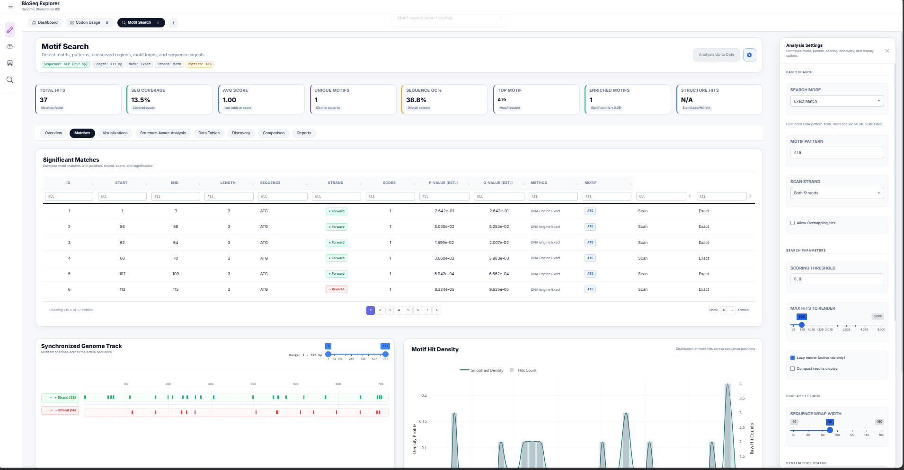
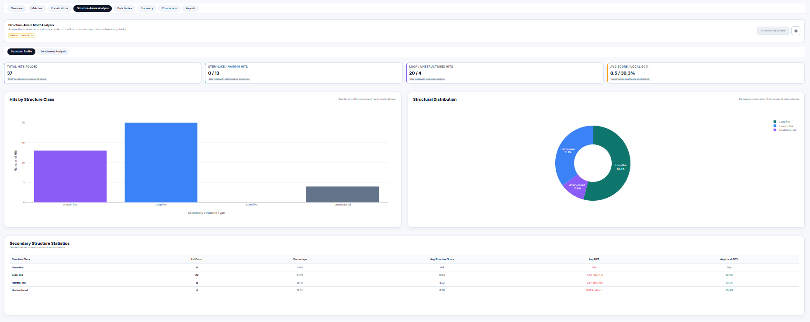

Computational Biology & Molecular Diagnostics Guide
An academic reference guide describing mathematical models, algorithms, and biological interpretations within the BioSeq Explorer Workstation.
Workstation Ingestion & Global Architecture
The BioSeq Explorer workstation operates as an integrated, state-synchronized bioinformatics workbench. Upon sequence ingestion—via manual input, FASTA upload, or remote API fetches (NCBI Entrez or Ensembl BioMart)—the mod_sidebar.R cleans and transmits sequence payloads to the central reactive values system ( server.R). The workstation calculates several structural and composition baselines on load:
Chargaff's Skew Metrics
Nucleotide density skews reveal DNA replication origins and transcription start sites. The workstation computes skews using sliding-windows:
Molecular Weight Calculation
The workstation estimates the molecular mass of double-stranded DNA based on nucleotide composition, assuming an average molecular weight of 660 Daltons per base pair:
Interactive System Dataflow & Logic Map
To trace how sequence payloads migrate from ingestion ports down to advanced workstations, click on the nodes in the diagram below. The side panel will dynamically load calculations, state variables, and code paths.
graph TD
%% Node Definitions %%
subgraph Ingestion ["1. Sequence Ingestion Ports"]
N1[Manual DNA Ingestion]
N2[File Upload Ingestion]
N3[NCBI API Ingestion]
N12[Ensembl API Ingestion]
end
subgraph State ["2. Core State Broker"]
N4[Central State Coordinator]
end
subgraph Tools ["3. Analytical & Workstation Tools"]
subgraph Viewers ["Visual Inspection"]
N5[Dashboard Metrics Engine]
N6[Sequence Viewer Tool]
end
subgraph Transducers ["Standard Operations"]
N7[RNA Transcript]
N13[Reverse Complement]
N14[Translate to Protein]
N8[6-Frame ORF Finder]
end
subgraph Advanced ["Advanced Analysis"]
N9[Pairwise Mutation Alignment]
N10[Codon Bias Optimizer]
N11[Motif Discovery Engines]
end
end
%% Connection Links %%
N1 -->|Load Click| N4
N2 -->|Upload FASTA/GBK| N4
N3 -->|Fetch Entrez API| N4
N12 -->|Fetch biomaRt API| N4
N4 --> N5
N4 --> N6
N4 --> N7
N4 --> N13
N4 --> N14
N4 --> N8
N4 --> N9
N4 --> N10
N4 --> N11
%% Styling Nodes %%
classDef inputNode fill:#2563eb,stroke:#3b82f6,stroke-width:1px,color:#fff,font-size:12px,font-weight:600
classDef stateNode fill:#7c3aed,stroke:#8b5cf6,stroke-width:1px,color:#fff,font-size:12px,font-weight:600
classDef metricNode fill:#059669,stroke:#10b981,stroke-width:1px,color:#fff,font-size:12px,font-weight:600
classDef toolNode fill:#ea580c,stroke:#f97316,stroke-width:1px,color:#fff,font-size:12px,font-weight:600
class N1,N2,N3,N12 inputNode
class N4 stateNode
class N5 metricNode
class N6,N7,N8,N9,N10,N11,N13,N14 toolNode
%% Click Callbacks %%
click N1 call nodeClicked
click N2 call nodeClicked
click N3 call nodeClicked
click N4 call nodeClicked
click N5 call nodeClicked
click N6 call nodeClicked
click N7 call nodeClicked
click N8 call nodeClicked
click N9 call nodeClicked
click N10 call nodeClicked
click N11 call nodeClicked
click N12 call nodeClicked
click N13 call nodeClicked
click N14 call nodeClicked
Select a Node
This interactive map traces how biological sequence inputs travel, where variables are updated, and what computations are performed on the server.
Codon Usage Bias & Host Adaptiveness
The genetic code is degenerate: 18 of the 20 standard amino acids are encoded by multiple synonymous codons. Codon usage bias (CUB) refers to the non-random distribution of these codons in protein-coding sequences. This workstation provides four metrics to analyze this bias, integrated inside codon_usage/server.R.
1. Relative Synonymous Codon Usage (RSCU)
RSCU measures the relative frequency of a codon compared to the frequency expected under uniform codon usage for its corresponding amino acid:
Where \(X_{ij}\) is the count of codon \(j\) encoding amino acid \(i\), and \(n_i\) is the degeneracy of amino acid \(i\).
An RSCU = 1.0 signifies that all synonymous codons are chosen with equal probability. An RSCU > 1.0 highlights preferred codons (frequently matched with abundant tRNAs), whereas RSCU < 1.0 represents under-represented codons. High-expression genes typically exhibit a clustering of high RSCU values in their reading frames.

2. Codon Adaptation Index (CAI)
CAI measures the degree of codon optimization of a gene relative to a host reference set of highly expressed genes:
Where \(f_{ij}\) is the frequency of codon \(j\) encoding amino acid \(i\) in the host reference genome, and \(w_m\) is the relative adaptiveness of the \(m\)-th codon in a sequence of length \(L\).
CAI values range from 0 to 1. A CAI close to 1 indicates that the sequence is highly adapted to the host's translation machinery. CAI calculations are performed in engine_cai.R using local genome tables for E. coli, S. cerevisiae, and H. sapiens.
3. Effective Number of Codons (ENC) & Wright's Neutral Mutation Curve
ENC measures the overall codon bias of a gene, independent of host-specific references. It ranges from 20 (extreme bias, where only one codon is used for each amino acid) to 61 (no bias, where all codons are used equally). Wright's neutrality baseline relates \(ENC\) to \(GC_3\) (GC content at the third codon position) under neutral selection:
Codon usage bias is driven by a combination of mutational pressure and translational selection. When ENC values fall on or close to the neutral curve, the bias is driven solely by mutational pressure (GC bias). When ENC values fall significantly below the curve, it indicates strong evolutionary selection for specific codons, which is common in highly expressed genes. This diagnostic is implemented in engine_enc.R.

Codon Optimization Studio & Back-Translation
For heterologous gene expression (e.g., expressing human GFP in E. coli), expression rates can be severely restricted by "rare codons"—codons whose matching tRNAs are scarce in the expression host. The workstation's optimization engine ( engine_codon_optimization.R) implements three optimization strategies:
| Strategy | Algorithm Details | Best Suited For |
|---|---|---|
| Max CAI | Selects the most frequently used codon (\(w_{ij} = 1.0\)) for every amino acid. | Maximum short-term expression levels. |
| Harmonized | Selects codons randomly based on the host's relative frequency distribution, matching host codon ratios. | Preventing translation bottlenecks and protein misfolding. |
| Balanced | Selects high-adaptiveness codons while balancing GC content at the third position to avoid mRNA secondary structures. | Stable expression across highly variable systems. |

Motif Search, IUPAC Expansion, & PWM Log-Odds
Conserved sequence motifs represent functional binding sites for transcription factors, RNA-binding proteins, or restriction enzymes. The Motif Search Workstation ( motif_search/server.R) combines search modes to detect these signals.
1. IUPAC Degenerate Expansion
Degenerate DNA sequences (e.g. promoters containing TATA boxes or restriction recognition sequences) are scanned by expanding ambiguous IUPAC nucleotide letters into equivalent regular expressions:
2. Position Weight Matrix (PWM) Log-Odds Scoring
Unlike binary exact searches, transcription factors bind to sequences with varying affinity. To model this, the workstation calculates a log-odds likelihood score \(S\) at each position:
Where \(P(b,k)\) is the frequency of base \(b\) at position \(k\) in the Position Frequency Matrix (PFM), \(P_{\text{bg}}(b)\) is the genomic background frequency of base \(b\), and \(p\) is a Laplace pseudocount (0.25) to avoid division by zero.

RNA Secondary Folding & Fisher Structural Enrichment
The function of a motif is heavily modulated by its structural context (e.g. a loop-bound motif may be accessible to RNA-binding proteins, while stem-bound motifs are locked). The motif search engine integrates secondary structure folding calculations in structure_summary_panel.R.
1. Dot-Bracket Folding & Structural Classification
Using thermodynamic folding algorithms (Minimum Free Energy), the sequence surrounding each motif match is folded, yielding a dot-bracket structure. Residues are classified as:
- Stem-like: Paired residues represented by matching brackets
(or). - Hairpin-like: Unpaired residues
.enclosed within a short loop (\(3 \le \text{len} \le 8\)). - Loop-like: Unpaired residues
.in large internal or bulge loops (\(8 < \text{len} \le 20\)). - Unstructured: Completely unpaired structural contexts.
2. Fisher's Exact Test for Structural Enrichment
To test whether detected motifs preferentially locate within certain structural environments, the workstation builds a \(2 \times 2\) contingency table and computes a one-tailed Fisher's exact test ($p$-value of hypergeometric distribution):
| Motif Hits | Non-Motif Sites | |
|---|---|---|
| In Structure S | \(a\) | \(c\) |
| Not in Structure S | \(b\) | \(d\) |

Interactive Code Map & File Paths
To trace calculations directly to the implementation code, click on the file pointers below to navigate to the exact biological engines and interface components:
| Tool Component | Source Code File Path | Function / Entry Point |
|---|---|---|
| Central State Coordinator | server.R | shared_state reactive container |
| Codon Engine Core | codon_usage/server.R | build_analysis() dispatcher |
| Codon Adaptation Index (CAI) | engine_cai.R | cai_adaptiveness() and CAI() |
| Effective Codons (ENC) | engine_enc.R | wright_enc() selection model |
| Back-Translation Optimizer | engine_codon_optimization.R | optimize_codon_sequence() |
| Motif Scan Coordinator | motif_search/server.R | motif_search_server |
| Secondary Fold Classifier | structure_summary_panel.R | fisher_exact_enrichment() |